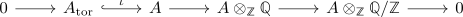
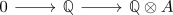
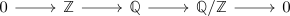

torsion exact sequence
Proposition
Let $A$ be abelian group, $A_{\mathrm{tor}}$ the torsion subgroup. then there exists an exact sequence

Proof
$A_{\mathrm{tor}}$
follows from the definition of $A_{\mathrm{tor}} \hookrightarrow A$ as submodule inclusion
$A$
Let $\alpha \in A$ be a torsion element for $p \in \mathbb{Z} \setminus \{0\}$ Then
\begin{align*}
a \mapsto (a,1) =& (a, \frac{p}{p}) \\
=& p \cdot (a,\frac{1}{p}) \\
=& (p \cdot a, \frac{1}{p}) \\
=& (0, \frac{1}{p}) \\
=& 0(0, \frac{1}{p}) \\
=& 0
\end{align*}
Let $a \in A \setminus A_{\mathrm{tor}}$, then there exists an module-monomorphism
\begin{align*}
a: \mathbb{Z} \rightarrow& A \\
1 \mapsto& a \\
\end{align*}
as rationals are flat module it follows that

is exact.
This shows that
\begin{align*}
(a \otimes 1) \neq 0
\end{align*}
showing $\mathrm{ker} \supseteq A_{\mathrm{tor}}$
$A \otimes_{\mathbb{Z}} \mathbb{Q}$, $A \otimes_{\mathbb{Z}} \mathbb{Q}/\mathbb{Z}$
follows from right exactness of the tensoring functor
